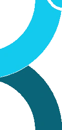
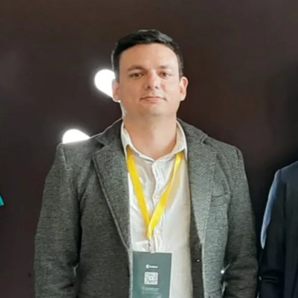

Acompanhamento do Projeto
Progresso e Indicadores Globais
Selecione uma meta técnica para explorar o detalhamento analítico, subdivisões operacionais e corte temporal de entrega.
Sincronizado
O INCT-IAEdu promove pesquisas, debates e desenvolvimento de soluções para políticas públicas da educação básica, com foco em aprendizagem com equidade, por meio do uso de IA Desplugada em contexto de restrição de recursos.
O Programa INCT é uma iniciativa coordenada pelo CNPq (Conselho Nacional de Desenvolvimento Científico e Tecnológico) que apoia projetos em rede, envolvendo grandes grupos de pesquisa de excelência articulados em todo o Brasil. Visa mobilizar grupos de pesquisa, articular redes nacionais e internacionais, impulsionar a pesquisa de fronteira e contribuir para o desenvolvimento sustentável do país.
Democratizar o uso da IA na resolução de problemas educacionais em ambientes com restrições de recurso.
Ser o principal centro de referência na criação de soluções de IA para a Educação Básica Pública.

Dez objetivos organizados em quatro frentes de atuação do instituto.
Pesquisadoras e pesquisadores à frente da coordenação, gestão e áreas técnicas do instituto.
Vice-coordenador
University of PennsylvaniaEUA
Gestão e parcerias
INCT IA.EduBrasil
Liderança de Educação e Políticas Públicas
INCT IA.EduBrasil

Liderança de Tecnologia
Universidade Tecnológica Federal do ParanáBrasil
O INCT IA.Edu tem como objetivo articular uma rede nacional e internacional de universidades, centros de pesquisa, governos, organizações da sociedade civil e parceiros do setor produtivo. Essas parcerias serão desenvolvidas ao longo dos 5 anos de projeto e visam conectar pesquisa, inovação, formação e implementação em contextos reais, ampliando o alcance de soluções de Inteligência Artificial na Educação acessíveis, inclusivas e orientadas à redução das desigualdades. Veja os parceiros que já embarcaram nessa missão:
Fale com a equipe do INCT IA.Edu.
inct.ia.edu@gmail.com
(91) 98065-6772
Universidade Federal de Alagoas